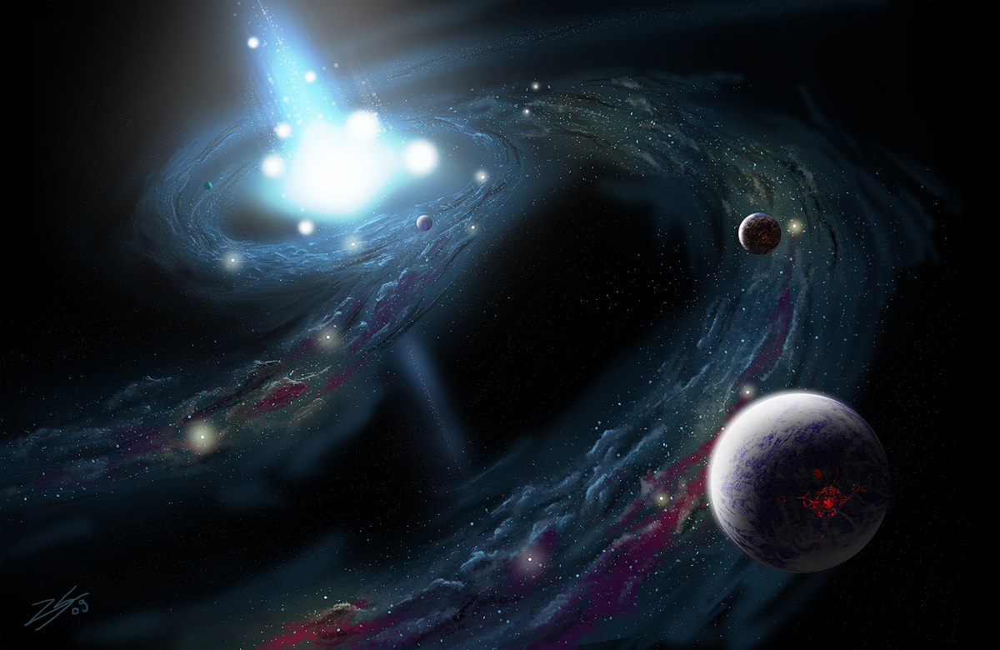
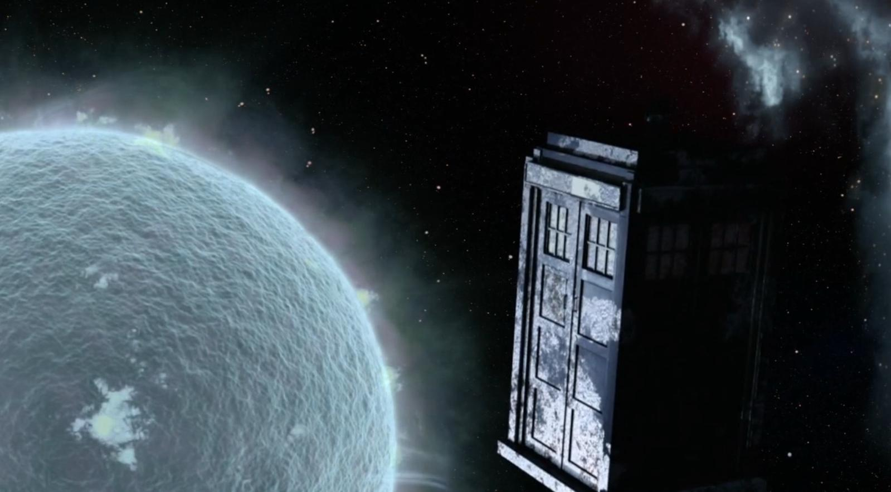
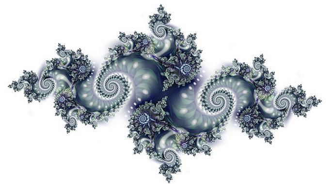

Var Olandan Olmaması Gerekeni Oluşturmak
Tarih boyunca keşfedebildikleri üzerinde çalışan insanoğlu bir noktadan sonra teorik çalışmalara daha fazla ağırlık vermeye başlamıştır. Var olan çeşitli fenomenlerin antitezlerinin de olduğunu varsayarak çeşitli bulgulara ulaşmayı denemiştir. Bir şey doğada varsa, onun tam tersi de bulunmalıdır düşüncesi tarihin çoğu diliminde insanların kafa yorduğu konulardan olmuştur. Değeri karekök -1 olan i sayısı yoktur, karadeliklerin aksine evrene hiç yoktan madde saçan akdelikler yoktur, Doctor Who dizisinin rüya ve uyanıklığın tarşıldığı bir bölümünde işlenen etrafını soğutan bir yıldız türü yoktur.
Karmaşık sayılar, yine kendileri gibi hayali bir varlık olan takyon parçacıklarının kütle değeridir. Bu parçacıklar hiçbir parçacığın erişemeyeceği hızın ışık hızı olduğu evrende en düşük hızı ışık hızından daha büyük olan hayali oluşumlardır.
Akdelikler karadeliklerin antitezidir. Karadelik diye kendine yaklaşan her maddeyi, enerjiyi ve bilgiyi yutan fenomenler varsa, bunların tam tersini gerçekleştiren; evrene bunları saçan cisimler de olmalı mantığıyla ortaya atılmıştır. Solucandeliği isimli, uzayın ve zamanın iki farklı konumunu birbirine bağladığı farz edilen köprülerin bir ucunu oluşturması gerektiği düşünülür. Diğer uçta ise bir karadelik yer alacaktır. Evrendeki en parlak ve en yüksek enerjiye sahip cisimler olan kuasarlar keşfedildiklerinde bunlar hakkında düşünülen şeylerden biri bunların teoride var olan akdelikler olduklarıydı. Fakat sonradan bunların aslında birer karadelik sistemi olduğu ortaya çıktı. Merkezde bulunan karadelik etrafındaki bolca maddeyi etrafında yüksek hızda çevirip sıkıştırarak büyük enerjiler oluşmasına neden oluyordu.

Soğuk yıldız ile ilgili herhangi bir hipoteze denk gelmedim. Doctor Who dizisinde bu konunun işlendiği bölümde karakterler sürekli olarak farklı iki durum arasında uyanıp rüyaya dalarak iki farklı evrende gidip geliyor ve hangisinin rüya olduğunu anlamaya çalışıyorlar. Bu iki durumdan birinde burada bahsedilen türde bir soğuk yıldız mevcut ve uzay gemileri olan TARDIS bu yıldıza doğru git gide yaklaşıyor, yaklaştıkça sıcaklık git gide düşüyor. Soğuk yıldız ifadesi normal şartlar altında sıcaklığı genel olarak yıldızların ortalama sıcaklığından daha düşük olan yıldızlar için kullanılan bir ifade. Doğal olarak bu konuda bilgisi olan olan herkes bir yıldızın oluşum şartlarını ve bir bütün halinde bulunması için gereken kesin yasaları bildiğinden bu tarz bir hipotezi ortaya atmak yürek isteyecektir. Evrendeki büyük çoğunluğu hidrojen olan serbest gaz ve diğer elementler kütleçekim etkisiyle bir araya gelerek yıldızın doğumuna neden olur ve bunun sonucu olarak yıldız yarattığı nükleer tepkimelerin etkisiyle her bir yanı yüksek ısı içeren bir küre halini alır. Dolayısıyla bir yıldızın yüksek sıcaklıktan bağımsız olarak düşünülmesi söz konusu değildir. Evrende soğuk bir şey varsa, bunun ismi de yıldız değildir. Kahverengi cüceler yıldız ve gezegen arasında kalmış gök cisimleridir ve gezegen kadar soğuk olmaları mümkündür fakat bunlar doğal olarak yıldız tanımı içinde yer almaz.

Karmaşık sayıların gelişimi konusuna daha ayrıntılı olarak bakalım. Her medeniyet kendi içinde matematiği geliştirerek farklı noktalara getirmiştir; fakat kökleri bugüne dayanan, bugünkü insanoğlundan oluşan medeniyetin geliştirdiği matematiği baz alarak olaya farklı bir açıdan yaklaşalım. Medeniyet dendiğinde bu tanım ırkları veya toplumları işaret etmez, toplumların birbiri ile ilişkileri sonucu ve yazının da icadıyla birlikte bulguların kalıcı hale gelmesiyle bugünkü insanoğlu tek bir medeniyet olarak alınabilir. Antik medeniyetlerin bundan ayrılmasının nedeni bir noktada tarih sahnesinden silinmeleri, çoğunun bulgularını kalıcı hale getirememesi ve dolayısıyla arada büyük bir kesinti oluşmasından kaynaklanır. O medeniyetlerin bulguları keşfedildikçe onlardan ufak çaplı olarak yararlanılır, fakat bu aynı tanıma girmelerini sağlamaya yetmez. Bugünkü medeniyetten devam edelim. Matematiği yavaştan kullanmaya başlayan insanlar için başlarda “0” diye bir sayı dahi yoktur. İnsanlar yokluğu ifade etmeye uzun bir süre gerek duymadı. Fakat birçok medeniyetin de yaptığı gibi sonunda bir şekilde bu sayı keşfedildi. Bir şeyin değeri varsa ve bu bir şekilde ifade edilebiliyorsa, aynı şekilde olmadığı durum da söz konusu olmalıydı. Artık ortada hiçlik ve pozitif sayılardan ibaret bir matematik bulunuyordu. Elbette bu kadarla sınırlı kalınmadı. İnsanoğlunun farklı bir yaklaşıma daha ihtiyacı vardı. Bu yaklaşım ise bir şeyin eksik olması olacaktı. Bunun sonucunda negatif sayılar ortaya atıldı. Varlıksal olarak ele gelir bir durumları olmasa da, bu kavram borç anlamına veya bir şeylerin olması gerektiği yerde o an olmaması gibi anlamlara geliyordu. Negatif sayılar gerçek hayatta direkt olarak bir varlığa sahip değildir. Yalnızca eksikliği ifade etmenin bir yoludur. Fakat bu insanoğlu için yeni bir yaklaşımdı. Bu kavram pozitif sayıların tersi olarak ortaya çıkmıştı. Karekök -1 gibi bir kavram da aynı mantıkla ortaya atılmıştır. Fakat negatif bir sayı gerçek anlamda yine bir anlama sahipken karekök -1 gibi bir sayının hiçbir şekilde bu evrende bulunmaması gerekir. İlk ortaya atıldığında matematikçiler için bir oyuncaktan ibaret olan bu kavram kuantum mekaniği gibi bilimsel alanların gelişimi ile birlikte, fiziğin derinliklerine inildiğinde her şeyin algılandığı gibi olmadığı keşfedildiğinde kendine yavaş yavaş yer bulmuştur. Kuantum da insan algısının dışındadır ve kuantum evreninde ilerleyebilmenin yolu yeni varsayımlar geliştirebilmektir. Bu yaklaşım elbette karmaşık sayıların var olduğu anlamına gelmez, yalnızca insanoğlunun bu aşamada yeni varsayımlara açık olması gerektiği ortaya çıktığında bir anahtar görevi görmeye başlamıştır. Bu yüzden bu kavramın ismi sanal sayıdır. Yine karmaşık sayılarla yapılan işlemlerden birçok bilim dalında ve çeşitli bilgisayar grafiklerinin oluşturulmasında faydalanılır.
